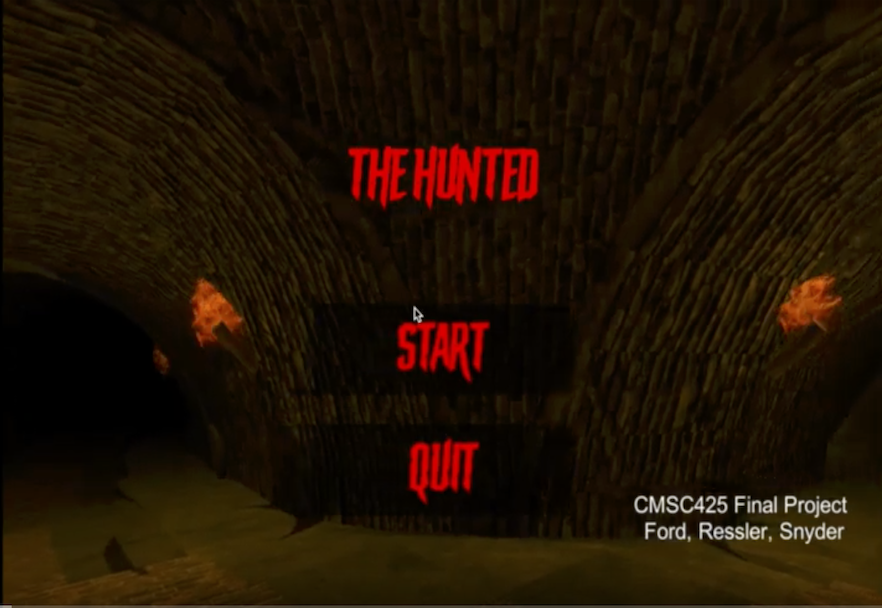

Will Snyder
I recently graduated from UMD: College Park with a BS in CS. Please have a look at some of the projects I've been working on lately! I love learning new things from the ground up and have solid foundations in low-level 3D graphics, game/VR development w/Unity, and deep learning.
Resume Github
Games/VR

Shaders/Rendering


Deep Learning

Having only recently dove into GPU programming, it's really got me thinking about paralellism and SIMD architectures. If the delay/forced flush involved with reading back from a GPU didn't kill performance, a lot more parallelism could be harnessed for game state calculations. Are there serious efforts to add low latency asynchronous read-back capabilities to mainstream GPUs?
The HoloLens spatial mapping system creates a pretty accurate mesh overlay of the room. That much is clear, but it seems too accurate to me. I dont need a mess of triangles to represent a rectangular table with nothing on it, I only need 12, practically only 2. The HoloLens 2 seems to have built in DL capabilities for semantic object recognition, but would a "shape classifier" be better? I'm interested in graph-based CNN-based approaches to filtering spatial maps into basic primitive shapes.
An interesting project would involve training an end-to-end graphics pipeline with semantic rendering stage followed by a DLSS post-process. The tensorflow graphics library could be used to render a layer of semantic information to assist the DLSS post-process. One could train the network to estimate raytraced images from simple GLSL shader passes.